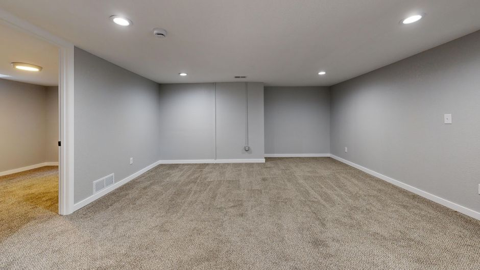
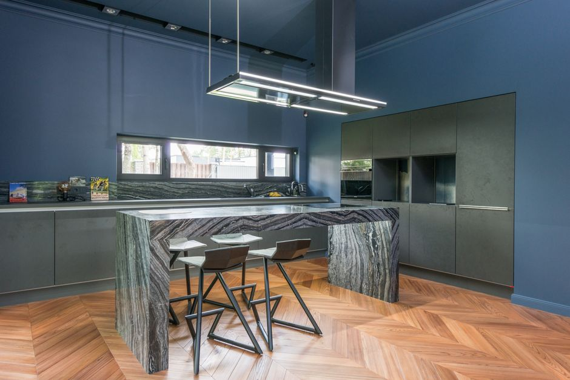
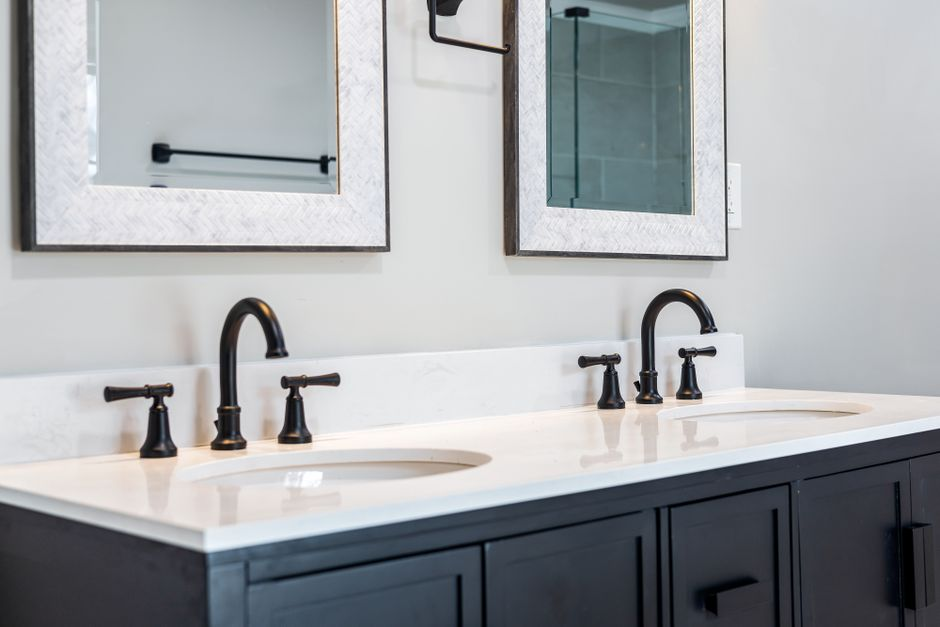

Basement Renovation
Full basement renovations across the GTA, from waterproofing and permits through to final finishes.
Learn More about Basement Renovation RenoRise
RenoRise
Where Quality Renos Rise Above
Home About Us Service Areas Served Blog Contact Request A QuoteFrom narrow Victorian semis in Cabbagetown and Riverdale to wider inner-suburb homes near Bedford Park, Reno Rise renovates Toronto basements around what's actually behind the wall.

Toronto has some of the most varied basements in the GTA, and which kind you have usually depends on which part of the city you live in. In older, narrower pockets like Cabbagetown and Riverdale, homes are typically Victorian or Edwardian semis, built shoulder-to-shoulder with basements that were never meant to be more than storage: low ceilings, older foundations, and often knob-and-tube wiring still running through them.
Further from the core, in areas like Bedford Park, homes tend to sit on wider lots with more generous basement footprints and fewer shared-wall constraints. That doesn't mean the basement is automatically finish-ready, moisture and electrical still get the same walkthrough, but the layout usually has more to work with once the groundwork is confirmed.
Either way, a Toronto basement renovation almost always touches something a suburban project doesn't: an older electrical panel, knob-and-tube wiring that needs addressing before anything else goes in, or a permit process shaped by the city's older housing stock. We handle that alongside the waterproofing and framing, not as a separate headache.
Serving the Greater Toronto Area
Full basement renovations, underpinning, waterproofing, and knob-and-tube removal for Toronto homes.
Pricing follows the same tiers as anywhere in the GTA, but older Toronto homes needing underpinning or knob-and-tube removal alongside the renovation often land toward the top of each range. A basic finished shell runs $25,000-$45,000. A mid-range renovation with a bedroom and full bathroom runs $55,000-$85,000. A full renovation involving underpinning, more common in Cabbagetown- and Riverdale-era homes, can pass $150,000. See the full basement renovation cost breakdown for the category-by-category numbers.
Full basement renovations across the GTA, from waterproofing and permits through to final finishes.
Learn More about Basement Renovation
Custom cabinetry, countertops, and layouts designed for how you actually live and cook.
Learn More about Kitchen Remodeling
Spa-inspired bathrooms with modern fixtures, tile work, and efficient use of space.
Learn More about Bathroom Renovation
Seamless additions that expand your living space without compromising your home's character.
Learn More about Home AdditionsWe check moisture, ceiling height, wiring, and egress first, then design the layout around what your basement actually offers.
Waterproofing, wiring updates, and permits come before drywall, every time — not after, and not as an afterthought.
Once the project is complete, we perform a detailed final walkthrough to ensure every finish and detail meets our high bar.
Not every Toronto basement needs a full renovation, and we'd rather say so than sell more scope than the space calls for.
If your home is newer or has already been updated and the basement is dry and code-height, a full renovation is more than you need; our lighter-scope basement finishing service gets you the same result for less money and less disruption. If you're in an older home in Cabbagetown, Riverdale, or a similar century-home pocket and there's visible water staining, a musty smell, or knob-and-tube wiring still in place, those need to be addressed through interior waterproofing and knob-and-tube removal before any finishing conversation is worth having. And if your ceiling height is short of code and underpinning isn't in the budget right now, it's fair to wait rather than build a space that can't legally be called a bedroom or rec room later.
"We needed underpinning done before finishing the basement and most contractors wouldn't even quote it properly. Reno Rise walked us through the whole process and pulled every permit themselves."
Most Toronto basement renovations run $25,000 to $160,000, consistent with GTA-wide pricing. Older downtown homes needing underpinning or knob-and-tube removal alongside the renovation often land toward the higher end. A mid-range renovation with a bedroom and full bathroom typically runs $55,000-$85,000.
Often, though not always. Narrow Victorian and Edwardian semis in Cabbagetown and Riverdale were commonly built with low basement ceilings, so underpinning comes up more here than in newer parts of the city. We measure ceiling height on the walkthrough before recommending it, rather than assuming every century home needs it.
Usually more straightforward. Detached homes in areas like Bedford Park tend to have wider basement footprints and fewer of the shared-wall constraints that narrow downtown semis have, which generally makes layout and access easier, though moisture and electrical still need the same walkthrough.
Yes, if the work includes an egress window, new plumbing, electrical beyond a like-for-like swap, or underpinning. A cosmetic refresh of an already-finished, code-compliant basement typically doesn't need one.
Related services and areas we cover:
Book a free, no-obligation assessment and get a detailed quote within 48 hours.